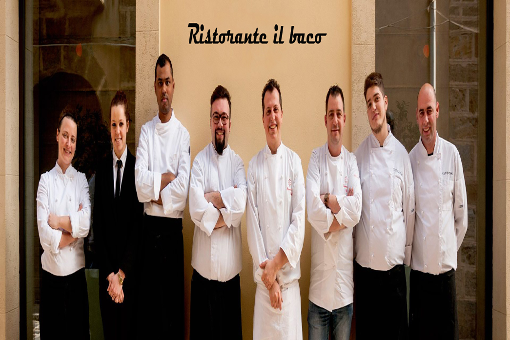
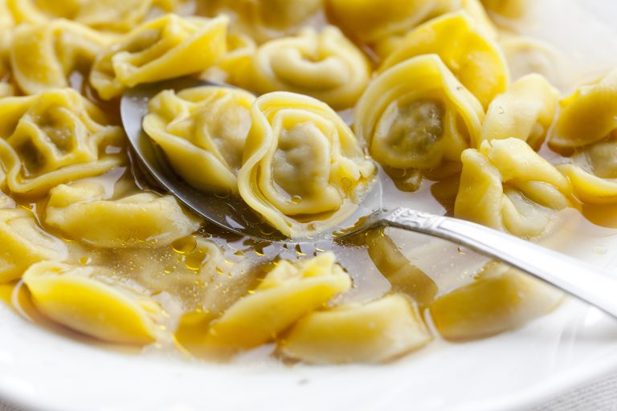

Il nostro staff
La storia inizia nel 1977 quando mamma Rosa preparava il pane in casa nel loro forno a legna custodito gelosamente nella taverna di famiglia. In quel tempo preparava pizze, biscotti e torte per amici e parenti.
Chi siamo

Il nostro menù
Il Baco riapre con il nuovo servizio a domicilio! Chiama o scrivici su whatsapp al +394444444 Consegna gratuita per tutti gli ordini superiori a 15€ Per gli ordini al disotto dei 15€ consegna 3€ e se hai qualche richiesta speciale… chiamaci!
Vai al menù